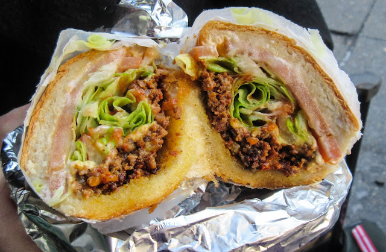

Chopped Cheese

Description
The Chopped Cheese is a sandwich originating from New York City, ground beef is cooked on a grill with onions and melted cheese ontop, served on a hoagie roll with lettuce and tomato.
Ingredients (2 servings)
- 300g Minced Beef
- 2 Hoagie Rolls
- Butter
- 1 White onion
- Garlic powder
- 4 slices of American Cheese
- Mayonnaise
- Iceburg lettuce
- Tomatoes
Steps
- Slice Hoagie rolls in the middle, spread some Mayonnaise on them, season them with salt and pepper and toast them (on a grill, skillet or whatever's going)
- Thinly slice a tomato, lay out the slices onto a baking sheet or large plate and season them with salt and pepper on each side
- Grab a skillet, place it on the stove and turn it up to the highest heat setting
- While the skillet is heating up; Thinly slice some Iceburg Lettuce then roughly chop up a white onion
- Add some butter into the skillet
- Add Beef Mince to skillet, season Beef with salt, pepper and garlic powder
- Using a stainless steel Spatula, "Chop" the seasoned beef mince in the skillet up into small pieces
- Cook the Beef untill browned
- Turn off heat, throw in chopped white onion, sparingly add some extra salt and pepper and "Chop" it all together
- Add 4 slices of American Cheese on top and let the cheese melt
- Lay out some baking paper or foil
- Place toasted Hoagie rolls onto the paper/foil
- Evenly dish out the cooked beef onto the Hoagie rolls
- Place the thinly sliced lettuce ontop of the beef
- Add the seasoned thinly sliced tomatoes to finish it off
- Tightly wrap up the roll with the paper/foil, cut in half and Enjoy!!